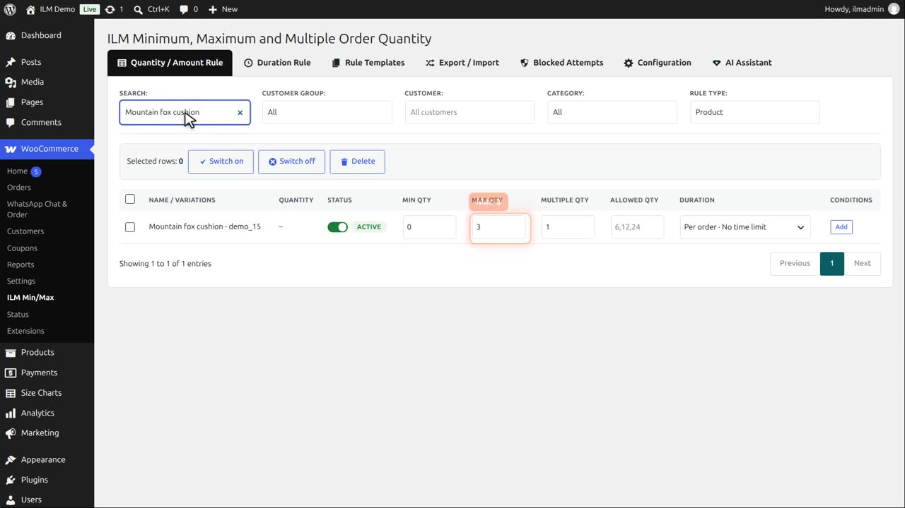
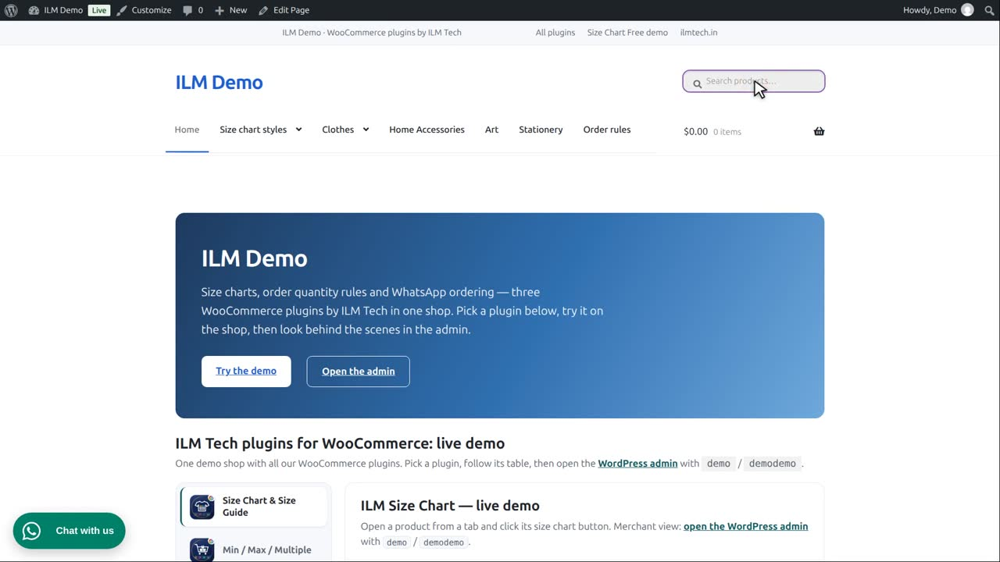
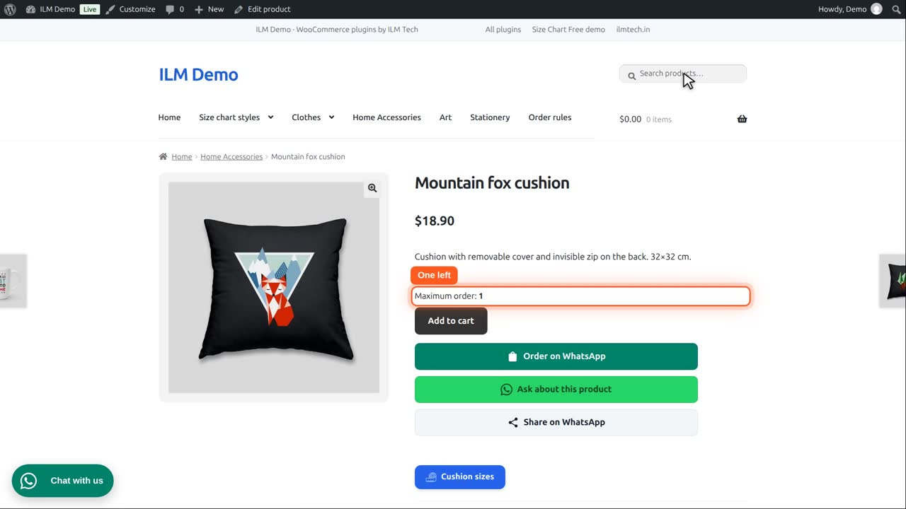
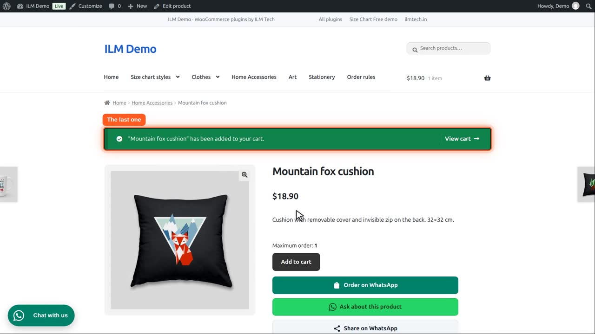
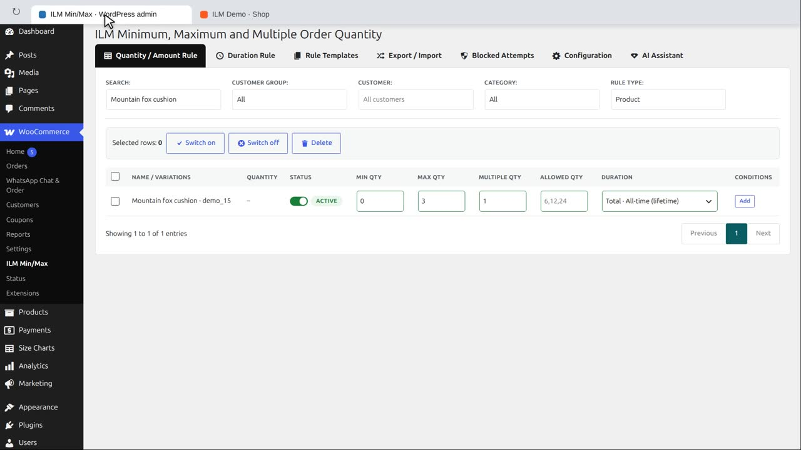

Pro add-on. This feature needs the Pro add-on. See Free and Pro.
| Type | Meaning |
|---|---|
| Total · All-time (lifetime) | Adds up everything the customer has ever ordered. Once they reach the limit they cannot order the product again. |
The Mountain fox cushion has a maximum of three.

In its Duration column, pick Total, all-time. Now the three are counted over the customer’s whole order history.

Demo already bought two, a month ago. So the product page tells them they can order only one more.

One more is fine.

Another one is refused: with the one in the cart, the limit of three is used up for good.

Which past orders count is set in step three of the duration rule, by order status. That is shown in its own video.